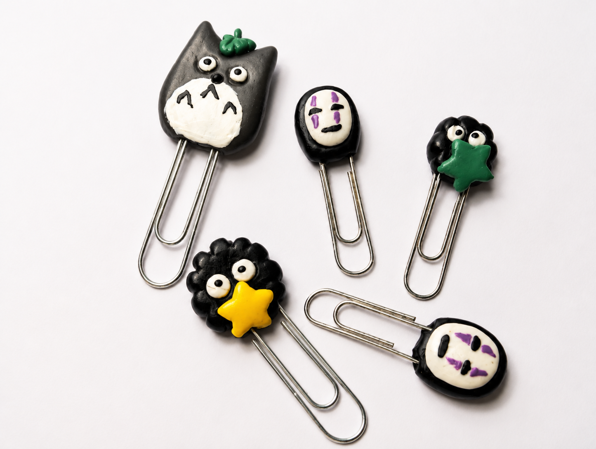
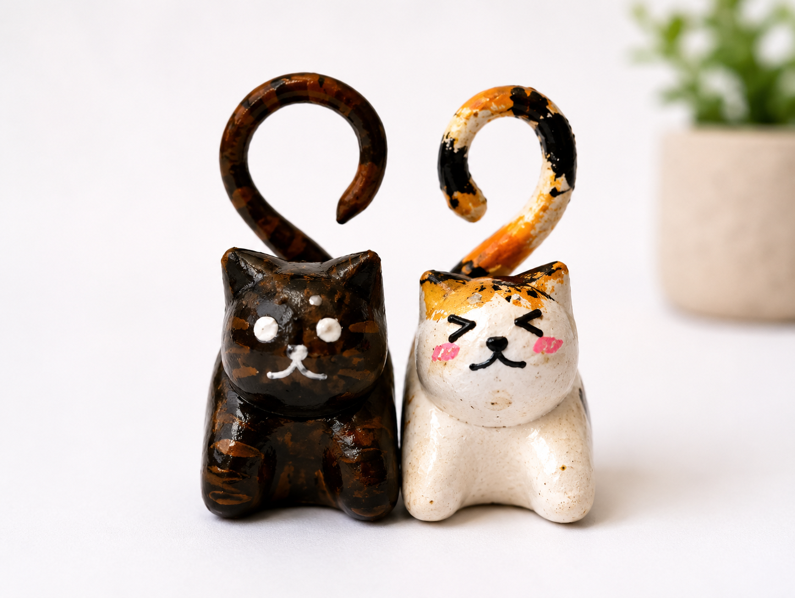
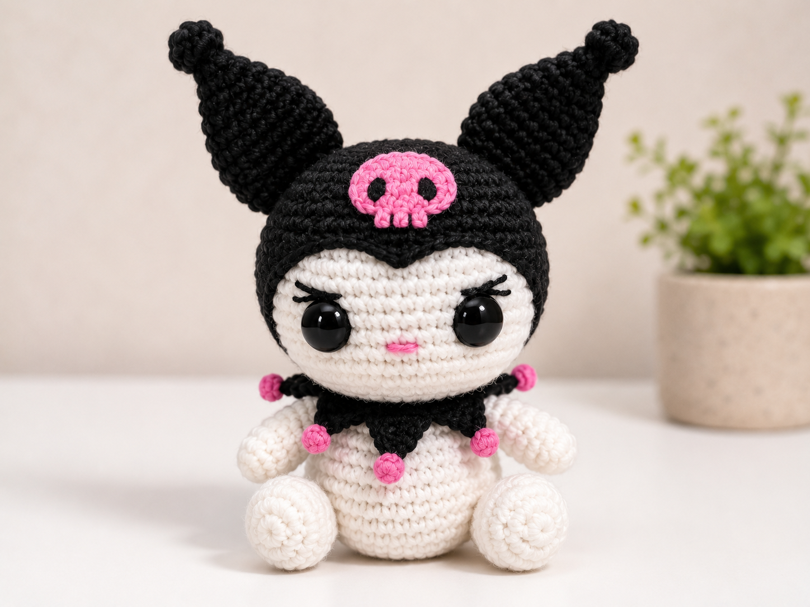
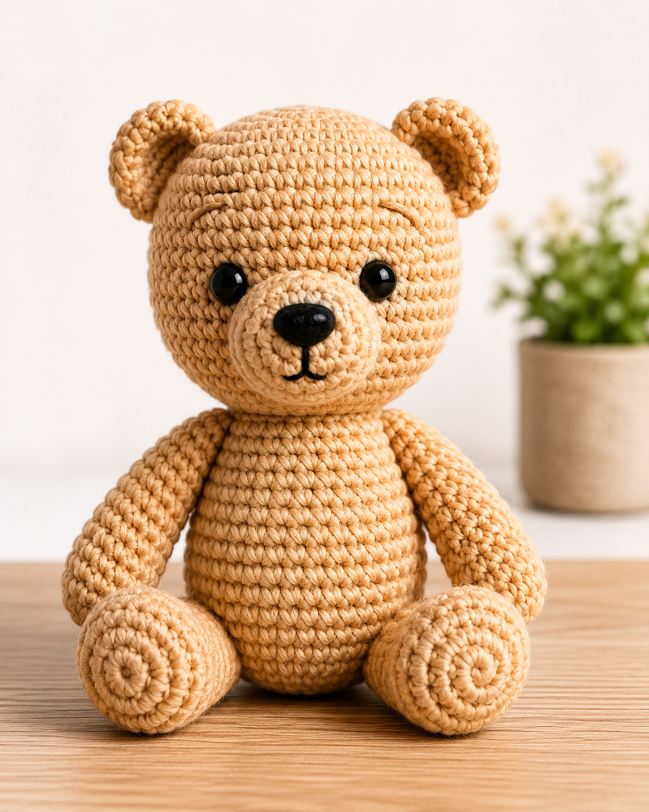
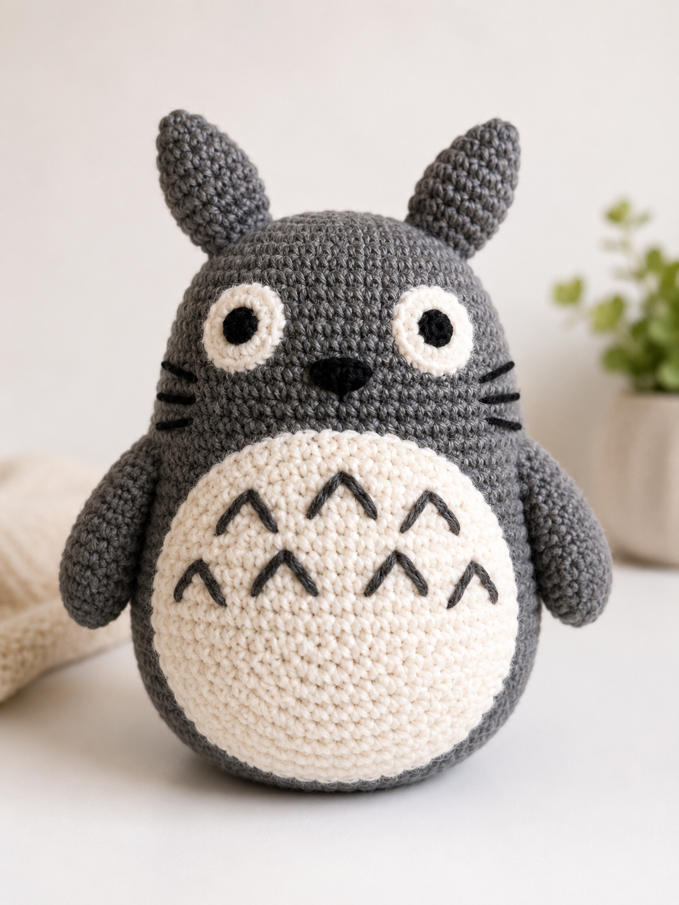

 Ganchitos Set de ganchitos decorados con figuras de porcelana fría, modelados y pintados a mano. Consultar
 Gatitos Figuras de gatitos en porcelana fría, hechas y pintadas a mano con detalles únicos. Consultar
 Kuromi Amigurumi de Kuromi tejido a mano con hilo de algodón y relleno hipoalergénico. Consultar
 Oso Tierno oso amigurumi tejido a mano con hilo de algodón y relleno hipoalergénico. Consultar
 Totoro Amigurumi de Totoro tejido a mano con hilo acrílico y relleno hipoalergénico. Consultar